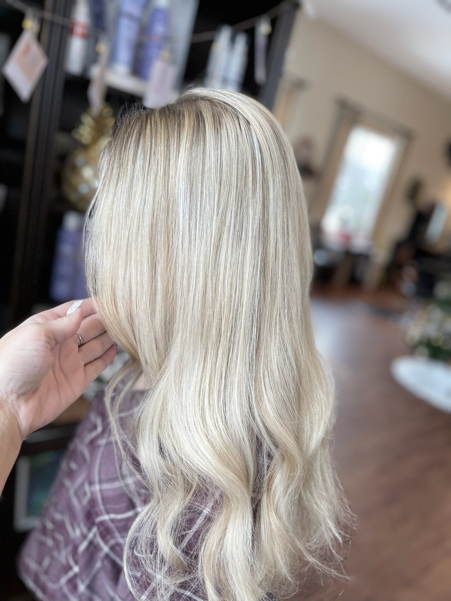

Hand-painted balayage, foil highlights, and babylights — custom blended for you.

Balayage and highlights are how we add dimension, brightness, and movement without a hard line. Every placement is custom — we paint and foil with your face shape, parting, and lifestyle in mind so the result looks effortless and grows out beautifully.
Whether you want a subtle sun-kissed glow, a bold blonde transformation, or rich brunette dimension, we mix the artistry of hand-painted balayage with the precision of foil work to get you exactly the result you want.
Highlights are foiled section by section for crisp, uniform brightness. Balayage is hand-painted freehand for a softer, more lived-in result with a less visible regrowth line. Many clients combine the two for the best of both.
Balayage is generally lower maintenance — every 12 to 16 weeks. Traditional foil highlights typically need a refresh every 8 to 12 weeks. A gloss between appointments keeps tone fresh.
Sometimes — but often a journey is healthier for your hair. We will tell you honestly at consultation whether one session is realistic, or whether 2 to 3 visits will get you a brighter, healthier result.